R2-v1 · 29 October 2026 · Owner feedback pending
One decision.
A connected consequence.
The accepted R1 house and transfer continue into mortgage pricing, monthly repayment and room to save from the same monthly budget.
Try R2-v1 Compare accepted R1-v1
Watch at normal speed
Unedited 1× browser recordings: the full transfer, fixed-rate baseline, conditional rate change, payment transformation, budget expansion, recurring monthly opportunity and direct reversal. Each lesson waits for Continue in the live experience; these recordings advance it automatically after short holds. No speed changes, compositing or fabricated frames.
Desktop
Mobile
Open mobile recording · Chrome touch emulation, 390 × 844; not a physical phone.
What to look for
Follow the same £60,000 from savings into the house, then reverse it. At the marked 80% boundary, the fictional rate changes in a step and the same interest extension narrows. Watch a payment strip leave the mortgage and become part of the fixed monthly budget. Its shrinking edge is the growing edge of the money available to save. Nothing accumulates into an investment balance.
Drag at any point, try £79,999 / £80,000 / £80,001 using exact entry, and switch lessons mid-motion. The deposit is retained. The payment node, house, interest and savings objects persist. A keyboard and reduced-motion route remains available.
The verified fictional example
A £400,000 home and £100,000 allocatable cash after separately funded buying costs. The first two moments preserve R1's fictional 4.5% for all 30 years. Pricing introduces a new explicit assumption: 4.5% above 80% initial LTV, 4.0% at/below it, fixed for the whole 30-year term. These are alternative opening mortgages, not an automatic rate reset as an existing mortgage is repaid. No lender guarantees these rates.
The monthly budget is £2,000 for mortgage plus saving/investing. Repayments already include interest; the interest and payment reductions are not two amounts to add. £0 retained cash is an illustrative extreme, not a recommendation to exhaust emergency savings. The monthly remainder is not available on purchase day.
| Deposit | Mortgage | Rate | 30-year interest | Monthly payment | Monthly available |
|---|---|---|---|---|---|
| £40,000.00 | £360,000.00 | 4.5% | £296,664.16 | £1,824.07 | £175.93 |
| £80,000.00 | £320,000.00 | 4.0% | £229,982.42 | £1,527.73 | £472.27 |
| £100,000.00 | £300,000.00 | 4.0% | £215,608.52 | £1,432.25 | £567.75 |
All 60,001 whole-pound choices use unchanged Python engine allocation, rate selection and full mortgage schedules at 50-digit Decimal precision. Every serialized row passed an independent 100-digit annuity reference, conservation and budget checks. Near the threshold, >80% / <80% labels prevent rounding from claiming the wrong pricing side. The browser selects precomputed figures; it performs no mortgage calculations. Full-precision examples, boundary triples, ledgers and provenance.
Continuity and performance
React retains the semantic SVG objects; GSAP owns presentation progress only. One cursor drives the conserved transfer. Guide capital labels share one nearest-£1,000 address while geometry stays continuous; stopped selections show their exact whole-pound values to pence. A compressed lookup of approximately 1.74 MB is decoded before interaction, with no requests during dragging. Interest hatching has a separate graphical scale; the budget represents a monthly flow, not purchase capital.
Verification
Five Node tests, three Python tests and the desktop/mobile browser suite passed, covering pause/resume/replay, rapid reversal, outside release, touch events, keyboard, exact-input validation, both directions across the rate boundary, retained state, persistent SVG identity, interrupted morphs, budget conservation and recurrence. Reduced motion, dynamic preference changes, 320px and simulated 200% HTML text enlargement were checked. No axe violations or page/SVG overflow in the tested desktop/mobile views.
Independent review found misleading near-threshold LTV rounding and stale chapter announcements; both received failing-then-passing regressions. Author review includes rendered screenshots and decoded recording samples, with timing telemetry. This does not establish novice understanding or owner motion acceptance.
Browser results · Capture events and frame timing · Decoded recording checks · Version manifest
Limits
- One fictional scenario, exact entry to whole pounds. No pence-entry, personalisation or live lender pricing.
- No physical-phone, novice comprehension or screen-reader session; no full browser-zoom or cross-browser certification. Tested with Chromium.
- The proportional house gives a short vertical drag distance on mobile. Keyboard and exact-entry alternatives remain.
- The monthly illustration does not implement successor-model savings accumulation. No investment growth, optimisation, R3 or final calculator.
- Recordings and screenshots support review. They cannot substitute for your judgment of fluidity and educational clarity.
Source and publication
Source branch design/m8-r2-v1, based exactly on accepted R1 source 3e894c37f5bb1d0f3bc0cbaef5ac90735e4dd125.
8ffbc5444a3abd7ffc9cd89aa5ecb08ecde35d00
Source commit. Publication branch review/r2-v1; publication commit history. The exact publication SHA is in the delivery handoff and source publication record. SHA-256 asset manifest binds this immutable iteration's files. Earlier reviews remain unchanged.
Key states and actual transitions

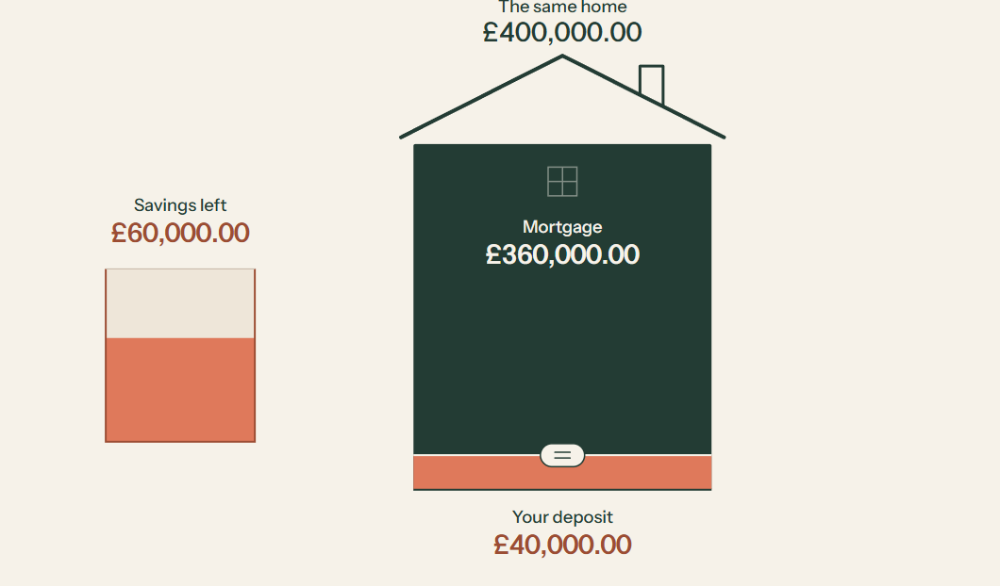

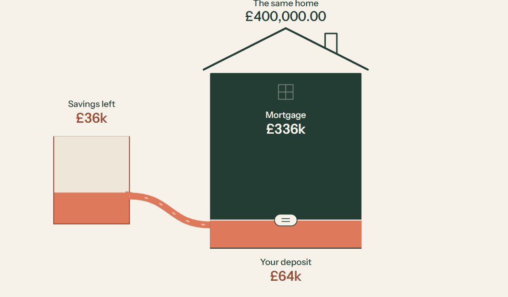

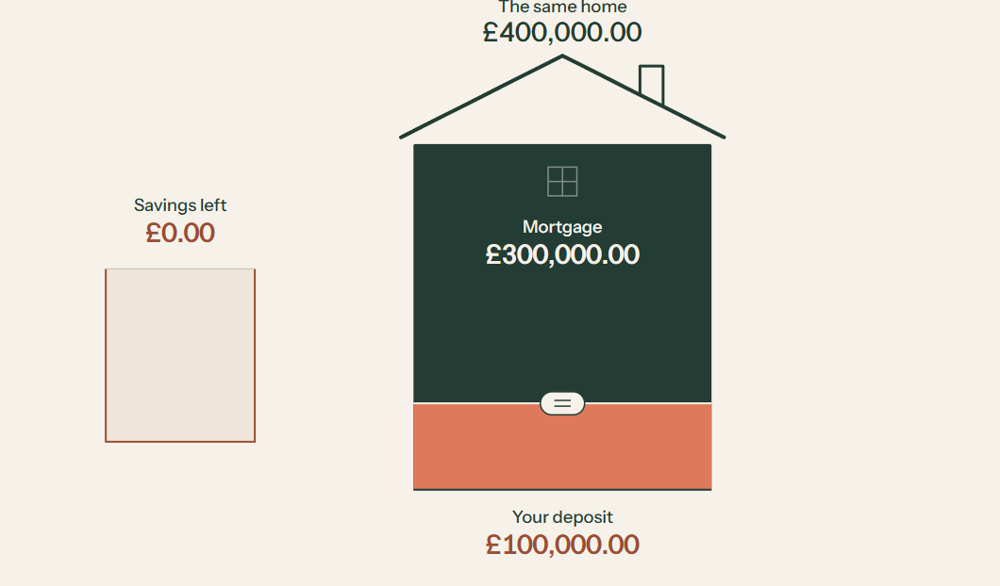

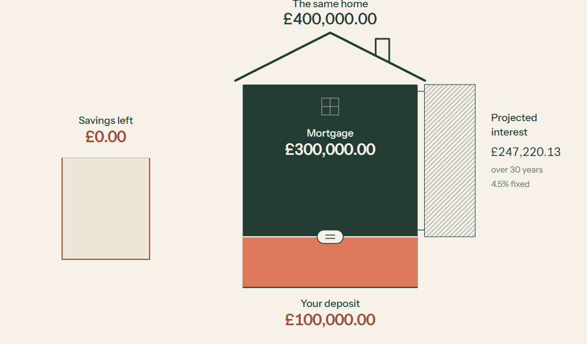

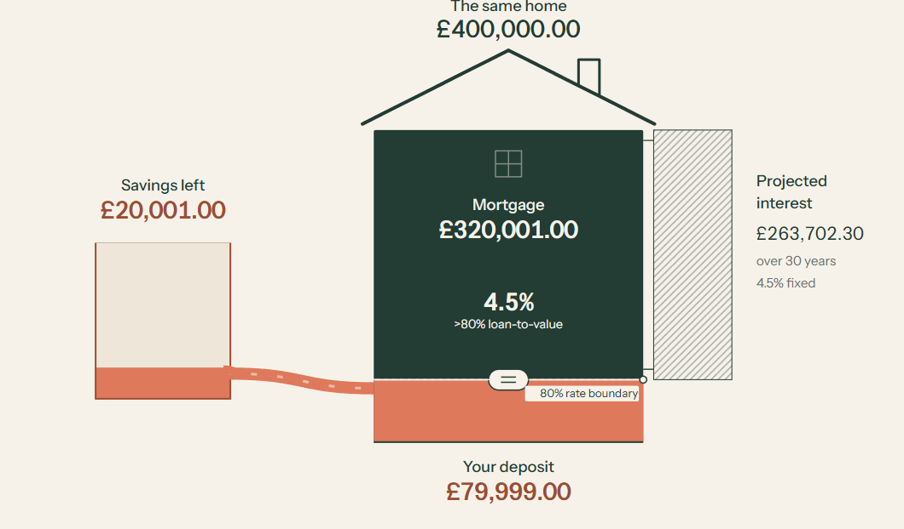


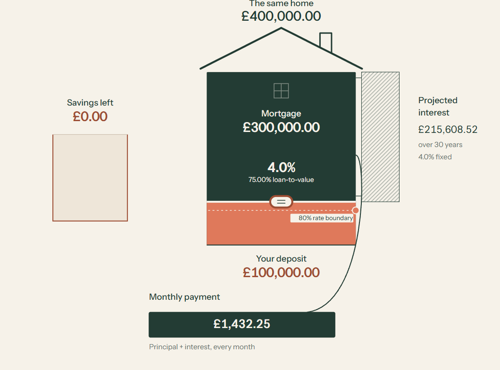

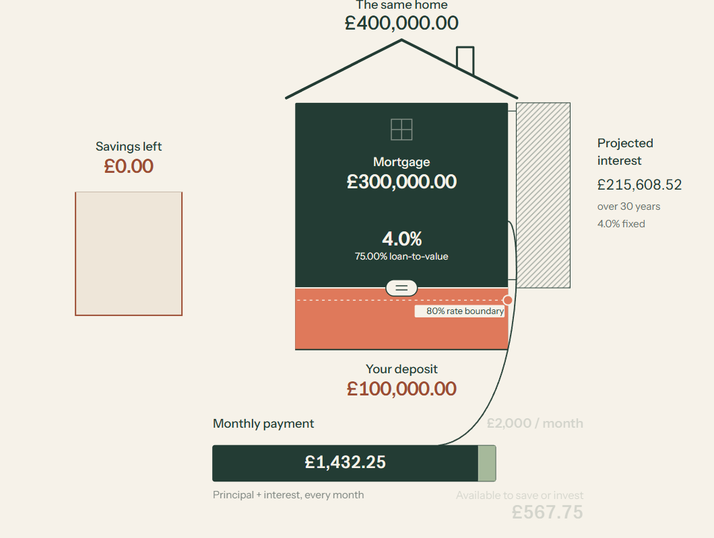

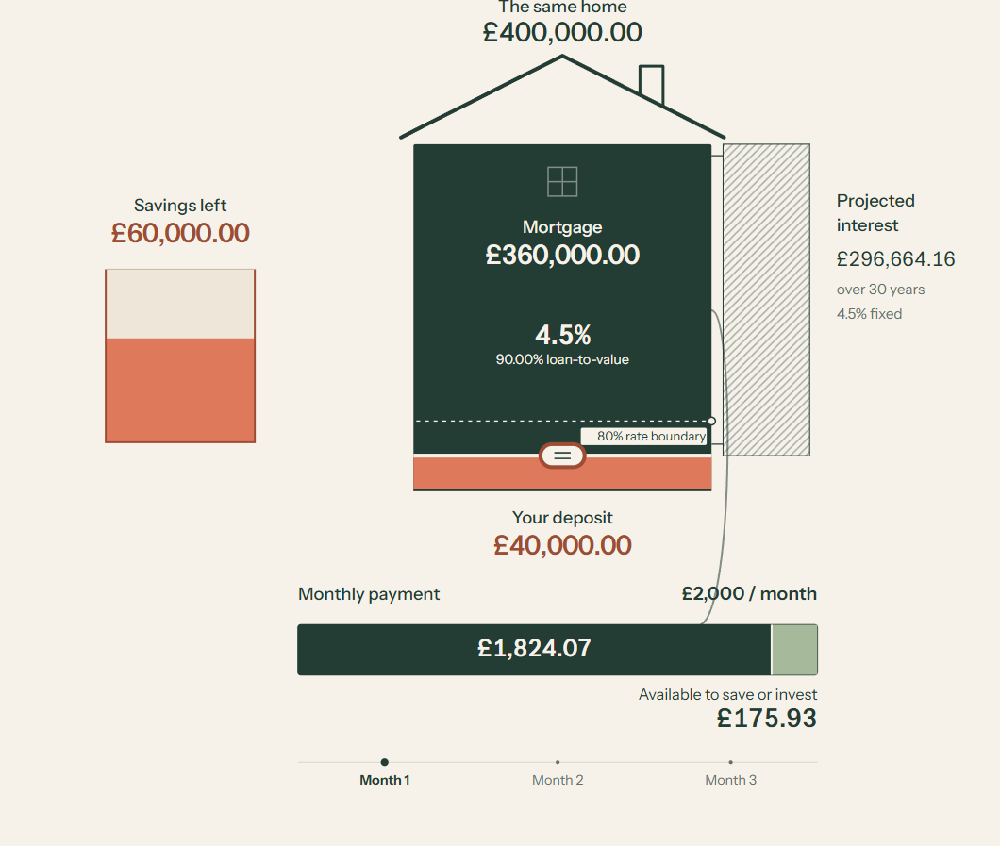


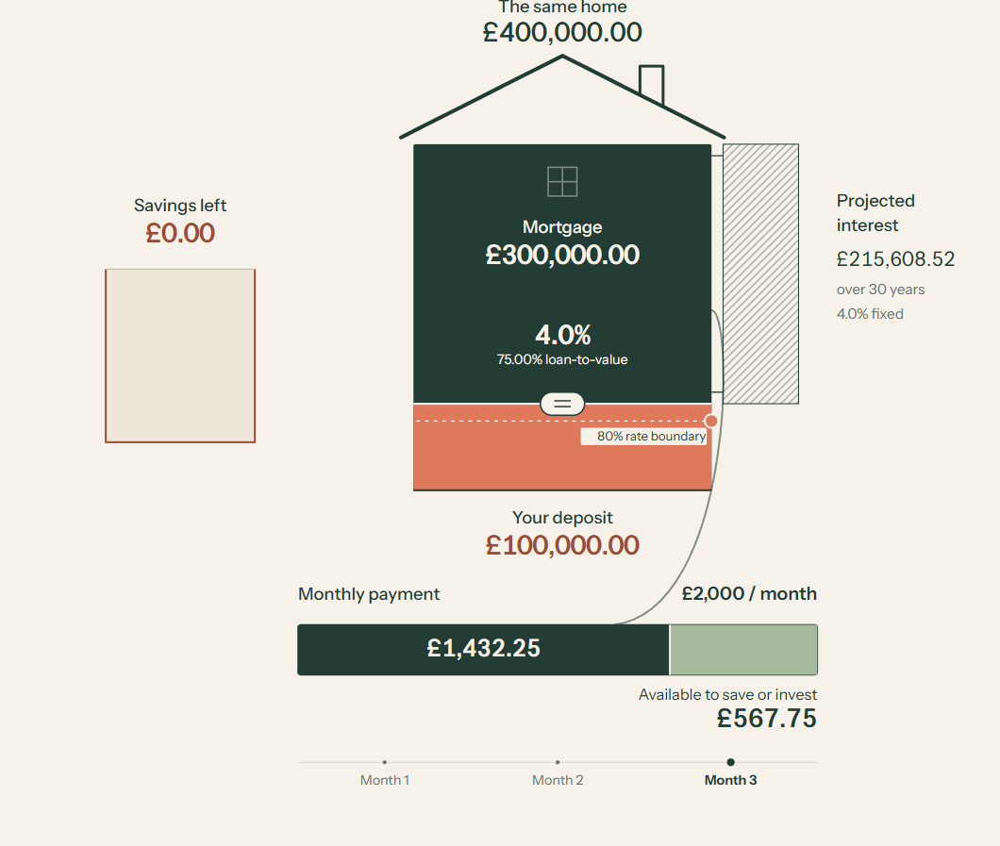

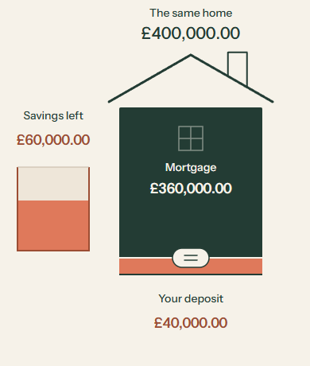

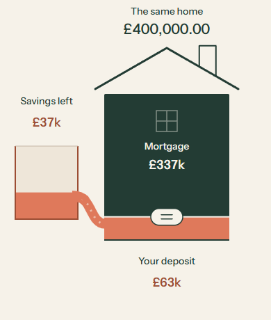

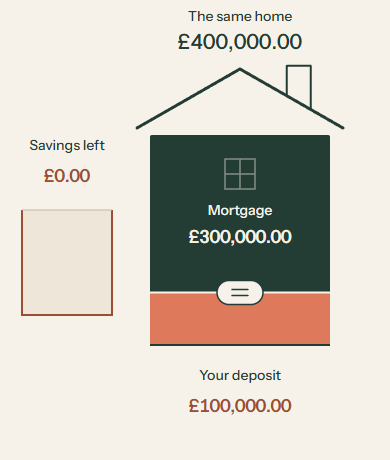

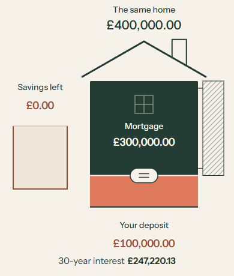

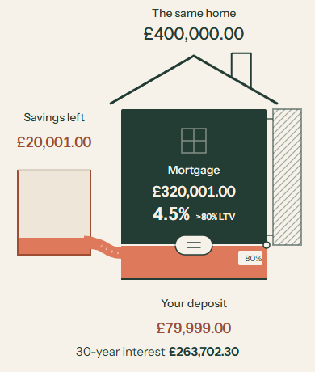

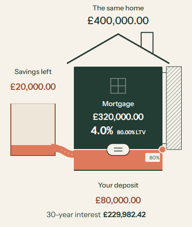


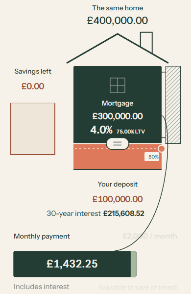

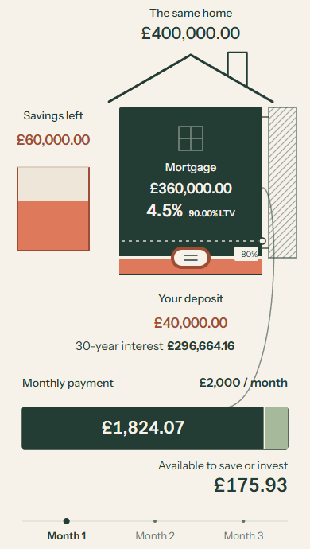

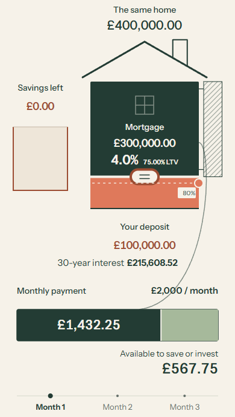

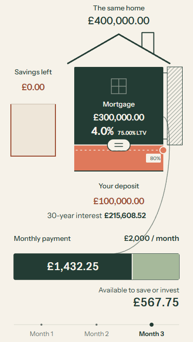
Owner decision
ACCEPT / REVISE / TRY ALTERNATIVE / STOP. With the captions largely ignored, does the movement explain why more deposit can unlock a better rate and leave more room to save each month?